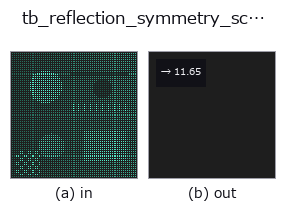

typed op• Data kinds: points → feature
• Call: fullseye.apply(img, "tb_reflection_symmetry_score", a=0.5, b=0.5) (the 2-D model is one image plus two scalar knobs a,b∈[0,1])

*The figure is the actual output on a synthetic 128×128 input. Left: input, right: output. Point clouds are drawn as a top-down scatter (brightness = z), 1-D series as a line plot, volumes as the maximum-intensity projection along z, videos as the middle frame, complex images as magnitude; return values that are not pictures are shown as the values themselves.*
*Knob a does not change the output (measured: identical at 0.1 / 0.5 / 0.9).*
*Knob b does not change the output (measured: identical at 0.1 / 0.5 / 0.9).*
Stages (the ops that come before → this op, left to right):
▸ tb_reflection_symmetry_score: stages (docs site)
Reflection symmetry score = chamfer(mirrored, original) / median nearest-neighbor spacing (smaller = more symmetric, scale-invariant). -> float.
> The detailed description below is the original text — the summary and the headings are translated.
`reflect_points で点群を平面で鏡映し、元の点群との対称 Chamfer 距離(chamfer_distance`:
双方向の最近傍距離の平均の平均)を、元の点群の最近傍間隔の中央値で割る。「鏡像が元の点から
点間隔の何倍ずれているか」という無次元量なので、座標を定数倍しても値は変わらない。
• `points: (N,3) 点群。plane_point / plane_normal`: 候補平面(法線は内部で正規化)。
• fail-closed: 点群が空・(N,3) でない(`chamfer_distance が ValueError`)、全点が一致して
間隔が定義できない(`ValueError`)。重複点で中央値間隔が 0 になる場合だけ、重心からの RMS
半径 × 1e-12 を床にする。
読み方の注意: 厳密に対称な形でも、鏡像の点が元のサンプル点にぴったり重なるわけではないので
スコアは 0 にならず、点間隔程度が床になる(実測値は `detect_reflection_symmetry` の表を参照)。
閾値で採否を決めるより、複数候補を掃引して最小値と 2 位との差(`margin`)を見る。PCA の
3 軸以外の候補面を試したいときは、この関数を平面パラメータで直接掃引する。
2-D 進化レジストリへ橋渡しした 3d の op `reflection_symmetry_score。実装は同じで、呼び出し規約だけ op(v, a, b) に合わせてある。この op に調整点は無く、a も b` も使われない。
• Sample-data catalog (download URLs / licences) — 2-D uses skimage.data (BSD/public domain) plus synthetic images; 3-D lists download URLs for real data sources (Stanford, PDS, …).
• Operator provenance and references — the sources of the research/methods this op family came from.
The program below has been verified to run (same input as the figure). In Studio's help this block becomes buttons that load and run it on the spot.
img_to_points 0.50 0.50 tb_reflection_symmetry_score 0.50 0.50
▸ Load this pipeline · Load & run
The examples below call the underlying ledger op reflection_symmetry_score. This bridge op is the same implementation adapted to the fn(v, a, b) convention, so the behaviour carries over unchanged (only the call form differs).
• dl_mesh_symmetry — py -3.11 examples_3d/dl_mesh_symmetry.py
• reflection_symmetry — py -3.11 examples_3d/reflection_symmetry.py
feature as input)typed)tb_points_to_voxel · tb_estimate_point_normals · tb_iss_keypoints · tb_angle_3points · tb_project_points · tb_render_point_depth · tb_statistical_outlier_removal · tb_radius_outlier_removal
*Provenance: ops.py — 2D operator registry. This per-op note is generated by tools/opdocs.py md (do not hand-edit).*
© 2026 Kazufumi Furuse — Fullseye operator documentation. Licensed under Apache-2.0.
{kind=link}